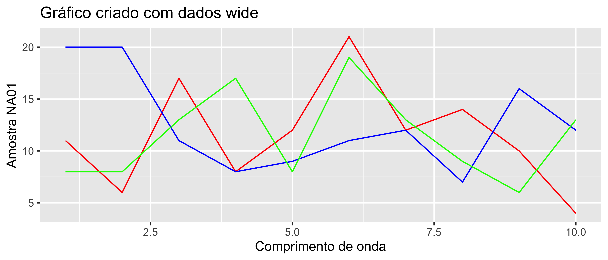
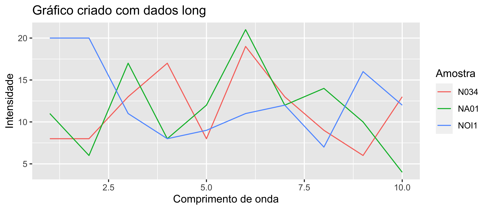
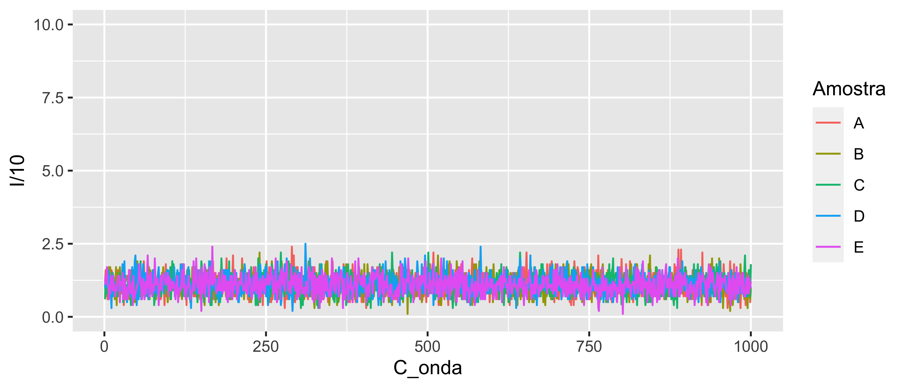
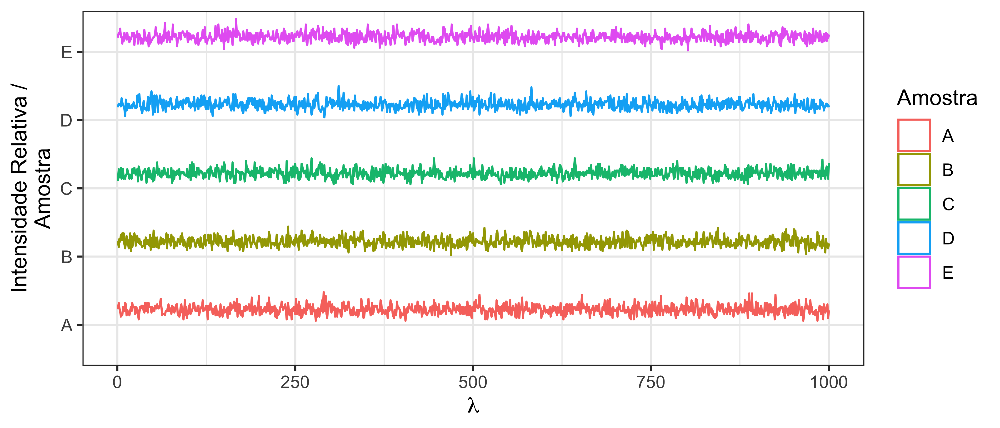

6.3 Gráficos deslocados no eixo y
6.3.1 Exemplos de gráficos
Há casos onde a unidade do eixo y é irrelevante e deseja-se fazer uma comparação entre o perfil de curva de várias amostras.
Este tipo de gráfico é muito utilizado em experimentos de difração de raio-x e cromatografia para se identificar similaridades ou diferenças nos picos de intensidade entre amostras com propriedades diferentes.
Um exemplo é na figura abaixo onde é feita a comparação entre várias amostras distintas usando a técnica de Difração de Raio-X.

Para reproduzirmos isso no R obviamente iremos usar o pacote ggplot2 mas antes vamos aprender algumas técnicas de transformação de dados.
6.3.2 Transformação de dados
É comum que pessoas acostumadas com o modelo de planilha de Excel tenham a tendência de escrever os dados na seguinte forma:
wide <- tibble(
"Comprimento de onda" = 1:10,
"Amostra NA01" = c(rpois(10, 11)),
"Amostra NOI1" = c(rpois(10, 11)),
"Amostra N034" = c(rpois(10, 11))
)| Comprimento de onda | Amostra NA01 | Amostra NOI1 | Amostra N034 |
|---|---|---|---|
| 1 | 11 | 20 | 8 |
| 2 | 6 | 20 | 8 |
| 3 | 17 | 11 | 13 |
| 4 | 8 | 8 | 17 |
| 5 | 12 | 9 | 8 |
| 6 | 21 | 11 | 19 |
| 7 | 12 | 12 | 13 |
| 8 | 14 | 7 | 9 |
| 9 | 10 | 16 | 6 |
| 10 | 4 | 12 | 13 |
Não há nada de errado com a forma que estes dados estão dispostos, são fáceis de ler, compreender e neste caso estão dispostos de forma organizada, porém este formato não segue os princípios de tidy data, onde cada linha da tabela deve ser uma observação e cada coluna uma variável.
Neste caso temos 3 variáveis, Comprimento de onda, Amostra e Intensidade do sinal, logo deveríamos ter 3 colunas, mas inves disso há 4 colunas sendo 3 delas para a mesma variável Intensidade do sinal para as Amostras.
Há um nome para a forma que os dados estão dispostos na tabela 6.1.
Este nome é wide data, ou seja, dados largos e largos indica que há um número maior de colunas do que é necessário.
A forma de dados que o R e por consequência os pacotes de R funcionam é no formato longo ou seja long data onde cada coluna é uma variável, cada linha uma observação e cada célula contém apenas um valor.
Um exemplo dos mesmos dados é feito na tabela 6.2:
long <- wide %>%
pivot_longer(cols = starts_with("Amostra"),
names_to = "Amostra",
values_to = "Intensidade",
names_prefix = "Amostra ") %>%
arrange(Amostra) | Comprimento de onda | Amostra | Intensidade |
|---|---|---|
| 1 | N034 | 8 |
| 2 | N034 | 8 |
| 3 | N034 | 13 |
| 4 | N034 | 17 |
| 5 | N034 | 8 |
| 6 | N034 | 19 |
| 7 | N034 | 13 |
| 8 | N034 | 9 |
| 9 | N034 | 6 |
| 10 | N034 | 13 |
| 1 | NA01 | 11 |
| 2 | NA01 | 6 |
| 3 | NA01 | 17 |
| 4 | NA01 | 8 |
| 5 | NA01 | 12 |
| 6 | NA01 | 21 |
| 7 | NA01 | 12 |
| 8 | NA01 | 14 |
| 9 | NA01 | 10 |
| 10 | NA01 | 4 |
| 1 | NOI1 | 20 |
| 2 | NOI1 | 20 |
| 3 | NOI1 | 11 |
| 4 | NOI1 | 8 |
| 5 | NOI1 | 9 |
| 6 | NOI1 | 11 |
| 7 | NOI1 | 12 |
| 8 | NOI1 | 7 |
| 9 | NOI1 | 16 |
| 10 | NOI1 | 12 |
Porém agora segue-se o princípio do tidy data onde cada coluna é uma variável (neste caso Comprimento de onda, Amostra e Intensidade) e cada linha contém informações necessárias sobre a observação feita.
Leia sobre a função pivot_longer() para entender como que é possível transformar dataframes do formato wide para long com apenas poucas linhas de código neste link
6.3.3 wide vs. long
Para fazer o gráfico que se deseja obter vamos usar o ggplot2 e ambos os dataframes wide e long para chegar ao resultado esperado.
Primeiramente vamos utilizar o dataframe wide e ver as vantagens e desvantagens que ele apresenta.
ggplot(data = wide,
aes(
x = `Comprimento de onda`
)
) +
geom_line(aes(y = `Amostra NA01`), color = "red") +
geom_line(aes(y = `Amostra NOI1`), color = "blue") +
geom_line(aes(y = `Amostra N034`), color = "green") +
ggtitle("Gráfico criado com dados wide")
Primeiro as desvantagens:
- É necessário escrever
geom_line(aes(y = <amostra>))várias vezes (uma vez para cada coluna) para se obter as 3 linhas das 3 amostras, caso existissem mais amostras seria necessário escrever mais vezes ainda; - As cores devem ser especificadas manualmente;
- Legendas não são inseridas.
Vantagens:
- As cores podem ser especificadas manualmente mais facilmente.
Agora usando o dataframe no formato long.
ggplot(data = long,
aes(
x = `Comprimento de onda`,
y = Intensidade,
col = Amostra
)
) +
geom_line() +
ggtitle("Gráfico criado com dados long")
Desvantagens:
- Cores não podem ser especificadas facilmente em comparação
Vantagens:
- Legendas criadas automaticamente;
- Código mais curto;
- Código mais fácil de ajustar
É claro que com estes dados não é possível observar o efeito do gráfico que deseja-se criar porque números aleatórios não representam o perfil de picos que experimentos de cromatografia e difração de raio-x apresentam mas tentaremos reproduzir com o aumento do número de pontos que iremos gerar nos próximos dataframes.
6.3.4 Construindo o gráfico
Criando os dados:
wide1 <- tibble(
C_onda = c(1:1000),
A = rpois(1000, 11),
B = rpois(1000, 11),
C = rpois(1000, 11),
D = rpois(1000, 11),
E = rpois(1000, 11)
)
long1 <- wide1 %>%
pivot_longer(cols = c("A":"E"),
names_to = "Amostra",
values_to = "I")Criando gráfico:
ggplot(long1,
aes(
x = C_onda,
y = I/10,
col = Amostra
)) +
geom_line() +
scale_y_continuous(limits = c(0,10))
Este gráfico com bastante ruído e poucos picos terá que ser o suficiente para o exemplo.
Observa-se que que se for plotado todos os dados, eles se sobrepõem sendo impossível verificar diferenças claras entre as amostras, portanto é necessário adicionar um fator de deslocamento no eixo y para que as linhas não fiquem sobrepostas.
O pacote ggridges (link) possui o geom ideal para isto, o geom_ridgeline onde o argumento height deve ser usado para indicar a altura da curva e o argumento y deve ser usado como identificador das amostras.
Ver abaixo:
library(ggridges)
ggplot(long1,
aes(
x = C_onda,
y = Amostra,
col = Amostra
)) +
geom_ridgeline(aes(height = I/50),
alpha = 0) +
theme_bw() +
labs(x = expression(lambda),
y = "Intensidade Relativa /\nAmostra") 
Claro que por causa da natureza dos dados, alguns ajustes tiveram que ser feitos para a melhor visualização porém está é a melhor forma de construir um gráfico parecido com o de referência.